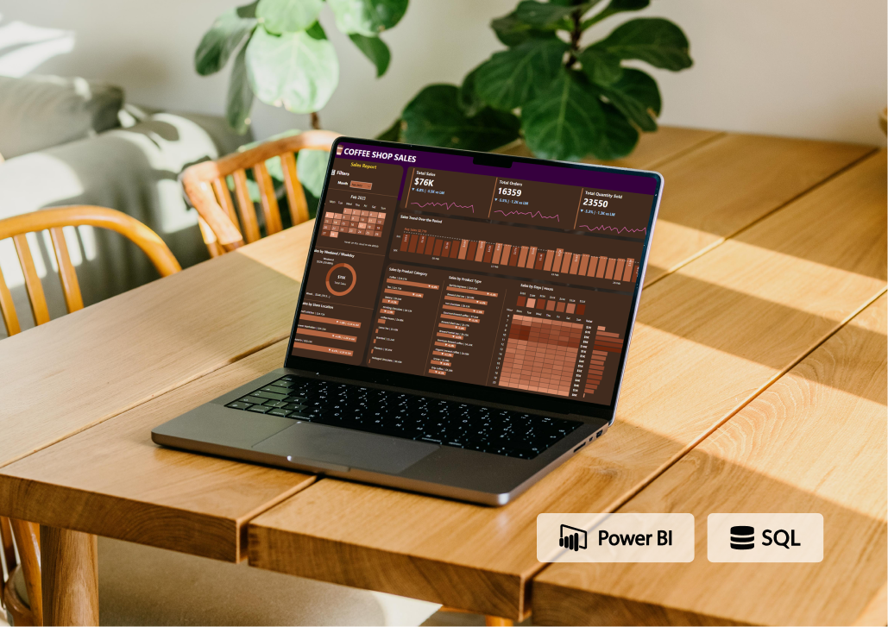
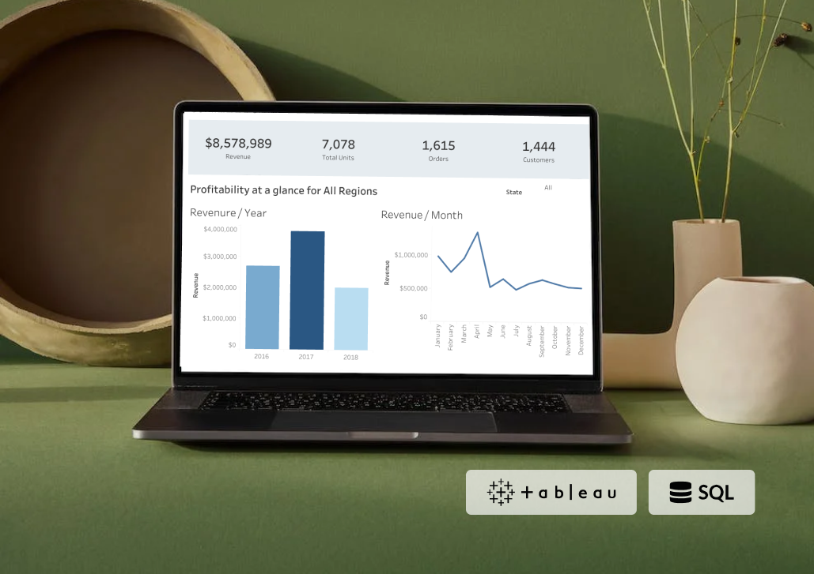
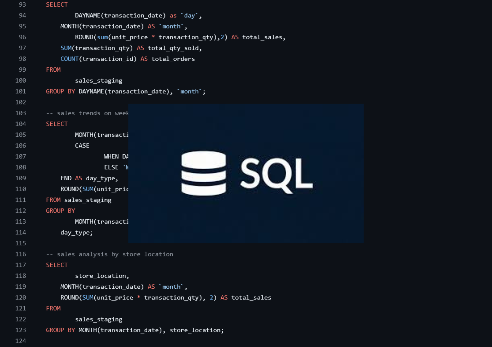
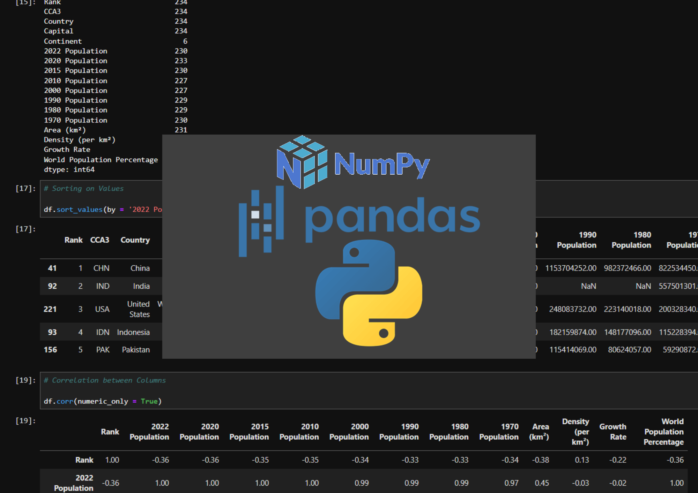
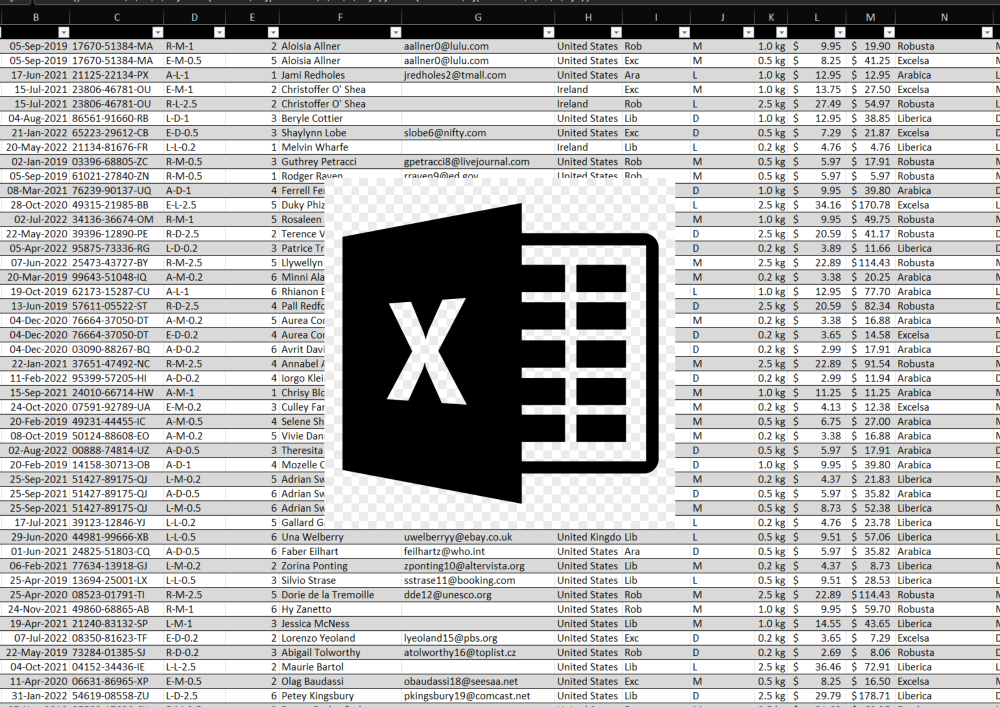

Coffee Shop
Sales Analysis

The analysis is based on transactional data that includes product details, revenue figures, and store locations. This dataset has been visualized in a Power BI dashboard
to uncover key insights regarding sales performance, customer preferences, and store profitability. The findings indicate that revenue generation is influenced by product
category, store location, and seasonal trends. Additionally, sales data show patterns that can help in inventory management and marketing strategies.
Bike Store
Sales Analysis

The analysis is based on transactional data that includes customer details, product categories, revenue figures, and sales locations. This dataset has been visualized in a
Tableau dashboard to uncover key insights regarding sales performance, customer preferences, and store profitability. The findings indicate that revenue generation is
influenced by product category, store location, and the effectiveness of sales representatives. Additionally, sales trends show seasonal fluctuations, with peak periods
and high-performing product categories driving overall revenue.

This section contains a collection of my SQL projects, showcasing my skills in data cleaning and exploratory data analysis (EDA). Each project
includes detailed SQL scripts and explanations to demonstrate my approach and methodology.

A collection of my projects in python, showcasing my skills in data cleaning, ecploratory data analysis(EDA) and data visualization. Each project includes detailed
jupyter notebooks and explanations to demonstrate my approach and methodology.

This section contains a collection of my Excel projects, showcasing my skills in data cleaning, various Excel functions and creating dashboards. Each project
includes Excel files and explanations to demonstrate my approach and methodology.